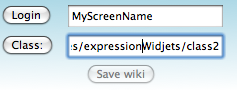
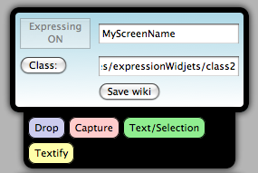

ExpressionWidgets successfully installed!
| Have you noticed the little blue icon on the left? ExpressionWidgets is installed and can be opened using the blue icon. Please locate it and click to expand the main panel. |  |
Setup Help
Pick a Wiki "Class" Repository
JETPACK FOR LEARNING DESIGN CHALLENGE NOTICE - THESE URLS ARE SET UNDER THE MOZILLA WIKI FOR NOW. BEWARE YOU ARE POSTING CONTENT TO A MOZILLA PROJECT. YOU ARE RESPONSIBLE FOR CONTENT YOU POST TO THESE URLS.
In order to get the Expression Widgets Jetpack application working you will need:
- 1) A Wiki URL - preferable under the media/wiki Mozilla at this point
- 2) A Wiki User Account - so you can login/save to the wiki page
- 3) To create your 'screenname' section in the wiki URL(1)
Class 2:
Class 3:
Class 4:
Create your Wiki User account
You will need to create a wiki username account using the above URL of your choice. If you have a wiki username and you have rights to edit the wiki page, then proceed to the next step.
Create your User Section
Edit the wiki page and type a section like the following example. This will be your screenname and you will need to type the exactly the same characters in the Expression Widgets login field. :
===MyScreenName===
Example:
With the 'screenname' section in the wiki page along with the URL you should use these values in the Login and Class fields in the Expression Widgets application panel, then click Login button. Example:
